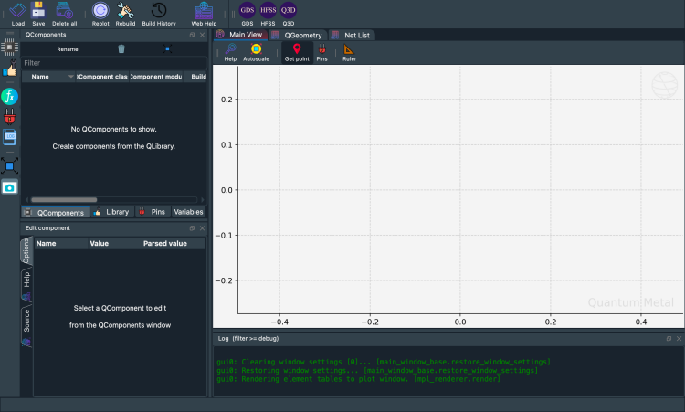
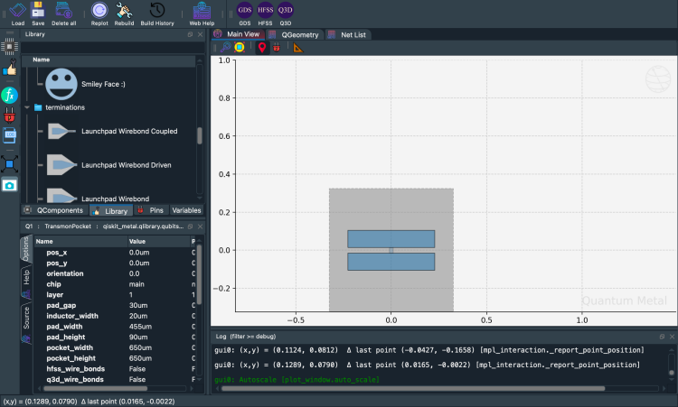
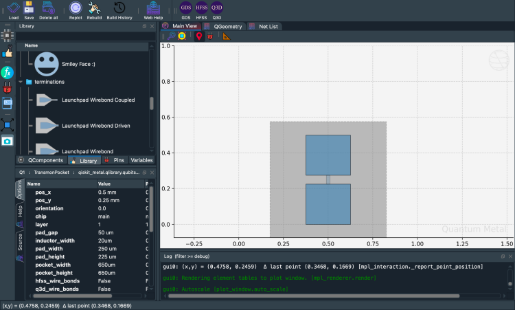
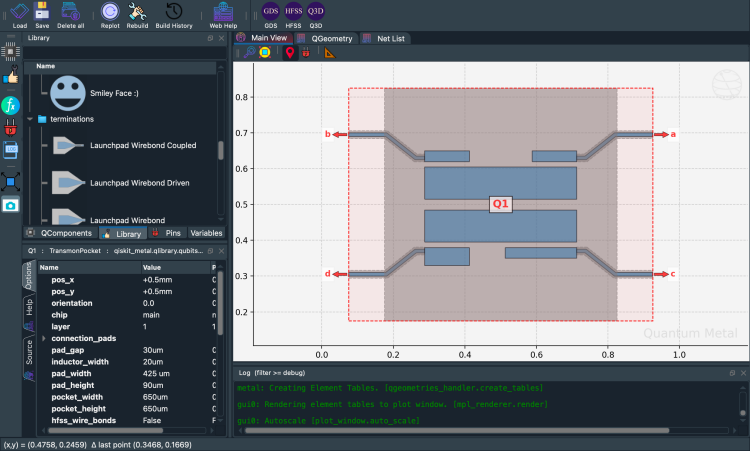
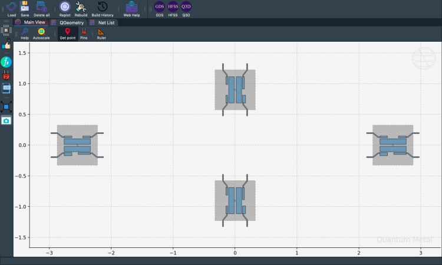
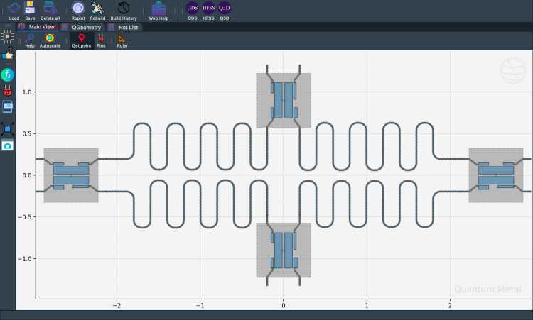
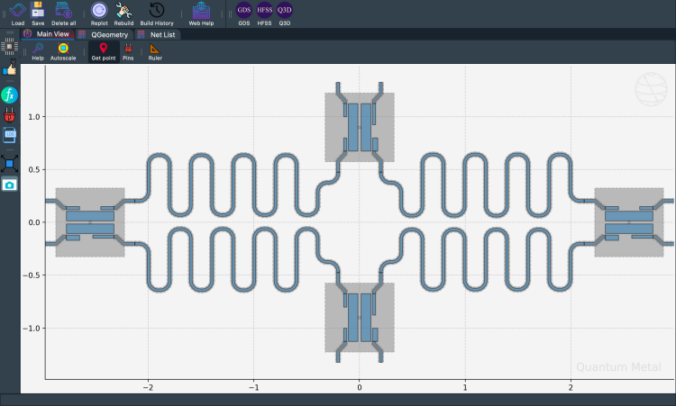
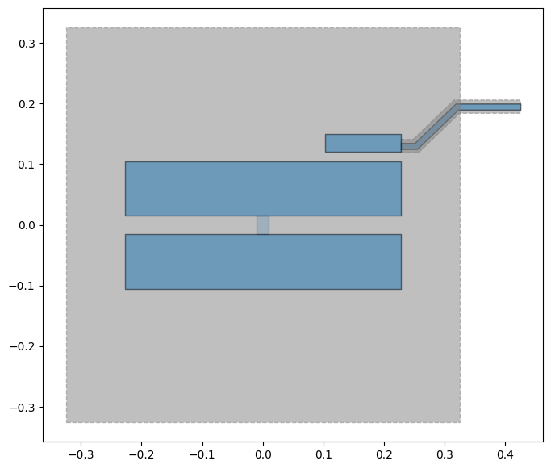

Note
This page was generated from tut/1-Overview/1.2-Quick-start.ipynb.
1.2 Quick start¶
💡 Following along without the Qt GUI
This Quick Start uses the desktop
MetalGUI. If you’re on Colab, Binder, JupyterHub, or running a script — anywhere the Qt GUI isn’t available or wanted — substitute everygui.rebuild()/gui.screenshot()call withqm.view(design). The returnedmatplotlib.figure.Figuredisplays inline in Jupyter and can be saved withfig.savefig(...).A runnable end-to-end headless version of this workflow lives in 1.4 Headless quick view.
For convenience, let’s begin by enabling automatic reloading of modules when they change.
[1]:
%load_ext autoreload
%autoreload 2
Import Qiskit Metal¶
[2]:
import qiskit_metal as metal
from qiskit_metal import designs, draw
from qiskit_metal import MetalGUI, Dict, open_docs
%metal_heading Welcome to Qiskit Metal!
10:22PM 54s WARNING [_maybe_warn_lite_flip]: [FutureWarning] quantum-metal v0.7.0 will move PySide6, qdarkstyle, pyaedt, pyEPR-quantum, and gmsh out of base dependencies into opt-in extras. To preserve the current v0.6.x install behaviour, run `pip install 'quantum-metal[full]'` before upgrading. See ROADMAP.md and docs/migration-to-v0.7.0.rst for details. Set QISKIT_METAL_SUPPRESS_LITE_FLIP_WARNING=1 to silence.
Welcome to Qiskit Metal!
My first Quantum Design (QDesign)¶
A Quantum Design (QDesign) can be selected from the design library qiskit_metal.designs. All designs are children of the QDesign base class, which defines the basic funcationality of a QDesign.
We will start with the simple planar QDesign.
design = designs.DesignPlanar()
Interactivly view, edit, and simulate QDesign: Metal GUI¶
To launch the qiskit metal GUI, use the method MetalGUI.
gui = MetalGUI(design)
[3]:
design = designs.DesignPlanar()
gui = MetalGUI(design)
[4]:
gui.screenshot()

[5]:
%metal_heading Hello Quantum World!
Hello Quantum World!
My First Quantum Component (QComponent)¶
A transmon qubit¶
We can create a ready-made and optimized transmon qubit from the QLibrary of components. Qubit qcomponents are stored in the library qiskit_metal.qlibrary.qubits. The file that contains the transmon pocket is called transmon_pocket, and the QComponent class inside it is TransmonPocket.
Let’s create a new qubit by creating an object of this class.
[6]:
# Select a QComponent to create (The QComponent is a python class named `TransmonPocket`)
from qiskit_metal.qlibrary.qubits.transmon_pocket import TransmonPocket
# Create a new qcomponent object with name 'Q1'
q1 = TransmonPocket(design, "Q1")
gui.rebuild() # rebuild the design and plot
[7]:
# save screenshot
gui.edit_component("Q1")
gui.autoscale()
gui.screenshot()

Let’s see what the Q1 object looks like
[8]:
q1
[8]:
name: Q1
class: TransmonPocket
options:
'pos_x' : '0.0um',
'pos_y' : '0.0um',
'orientation' : '0.0',
'chip' : 'main',
'layer' : '1',
'connection_pads' : {
},
'pad_gap' : '30um',
'inductor_width' : '20um',
'pad_width' : '455um',
'pad_height' : '90um',
'pocket_width' : '650um',
'pocket_height' : '650um',
'hfss_wire_bonds' : False,
'q3d_wire_bonds' : False,
'aedt_q3d_wire_bonds': False,
'aedt_hfss_wire_bonds': False,
'hfss_inductance' : '10nH',
'hfss_capacitance' : 0,
'hfss_resistance' : 0,
'hfss_mesh_kw_jj' : 7e-06,
'q3d_inductance' : '10nH',
'q3d_capacitance' : 0,
'q3d_resistance' : 0,
'q3d_mesh_kw_jj' : 7e-06,
'gds_cell_name' : 'my_other_junction',
'aedt_q3d_inductance': 1e-08,
'aedt_q3d_capacitance': 0,
'aedt_hfss_inductance': 1e-08,
'aedt_hfss_capacitance': 0,
module: qiskit_metal.qlibrary.qubits.transmon_pocket
id: 1
Parsed view of options
What are the default options?¶
The QComponent comes with some default options. The options are used in the make function of the QComponent to create the QGeometry you see in the plot above.
Options are parsed by Qiskit Metal.
You can change them from the GUI or the script API.
[9]:
%metal_print How do I edit options? API or GUI
You can use the GUI to create, edit, plot, modify, quantum components. Equivalently, you can also do everything from the python API. The GUI is just calling the API for you.
[11]:
# Change options
q1.options.pos_x = "0.5 mm"
q1.options.pos_y = "0.25 mm"
q1.options.pad_height = "225 um"
q1.options.pad_width = "250 um"
q1.options.pad_gap = "50 um"
# Update the geometry, since we changed the options
gui.rebuild()
[12]:
gui.autoscale()
gui.screenshot()

Seeing the effect: compare before and after¶
Metal’s design-as-code approach means every change is instant and visual. qm.view() lets you place two renders side-by-side to see exactly what changed — no GUI needed.
[ ]:
import qiskit_metal as qm
import matplotlib.pyplot as plt
# Record the original value so we can restore it
_orig_pad_width = q1.options.pad_width
# Make a change
q1.options.pad_width = "550 um"
design.rebuild()
# Side-by-side comparison
fig, axes = plt.subplots(1, 2, figsize=(12, 5))
qm.view(
design,
components=["Q1"],
title=f"Original pad_width={_orig_pad_width}",
ax=axes[0],
)
qm.view(design, components=["Q1"], title="Modified pad_width=550 um", ax=axes[1])
plt.tight_layout()
plt.close(fig)
display(fig)
<Figure size 2400x1000 with 2 Axes>
[ ]:
# Restore the original value before continuing
q1.options.pad_width = _orig_pad_width
design.rebuild()
print(f"Restored pad_width to {q1.options.pad_width}")
Restored pad_width to 250 um
Where are the QComponents stored?¶
They are stored in design.components. It can be accessed as a dictionary (design.components['Q1']) or object (design.components.Q1).
[14]:
q1 = design.components["Q1"]
[16]:
%metal_print "Where are the default options?"
A QComponent is created with default options. To find out what these are, use QComponentClass.get_template_options(design)
[17]:
TransmonPocket.get_template_options(design)
[17]:
{'pos_x': '0.0um',
'pos_y': '0.0um',
'orientation': '0.0',
'chip': 'main',
'layer': '1',
'connection_pads': {},
'_default_connection_pads': {'pad_gap': '15um',
'pad_width': '125um',
'pad_height': '30um',
'pad_cpw_shift': '5um',
'pad_cpw_extent': '25um',
'cpw_width': 'cpw_width',
'cpw_gap': 'cpw_gap',
'cpw_extend': '100um',
'pocket_extent': '5um',
'pocket_rise': '65um',
'loc_W': '+1',
'loc_H': '+1'},
'pad_gap': '30um',
'inductor_width': '20um',
'pad_width': '455um',
'pad_height': '90um',
'pocket_width': '650um',
'pocket_height': '650um',
'hfss_wire_bonds': False,
'q3d_wire_bonds': False,
'aedt_q3d_wire_bonds': False,
'aedt_hfss_wire_bonds': False,
'hfss_inductance': '10nH',
'hfss_capacitance': 0,
'hfss_resistance': 0,
'hfss_mesh_kw_jj': 7e-06,
'q3d_inductance': '10nH',
'q3d_capacitance': 0,
'q3d_resistance': 0,
'q3d_mesh_kw_jj': 7e-06,
'gds_cell_name': 'my_other_junction',
'aedt_q3d_inductance': 1e-08,
'aedt_q3d_capacitance': 0,
'aedt_hfss_inductance': 1e-08,
'aedt_hfss_capacitance': 0}
[18]:
%metal_print How do I change the default options
Now let us change the default options we will use to create the transmon
[19]:
# THIS ISN'T CHANGING THE DEFAULT OPTIONS - NEEDS UPDATE
q1.options.pos_x = "0.5 mm"
q1.options.pos_y = "250 um"
# Rebubild for changes to propagate
gui.rebuild()
[20]:
%metal_print How do I work with units? <br><br> (parse options and values)
(parse options and values)
Parsing strings into floats¶
Use the design.parse_value or QComponent.parse_value (such as q1.parse_value). The two functions serve the same purpose.
[21]:
print("Design default units for length: ", design.get_units())
print(
"\nExample 250 micron parsed to design units:",
design.parse_value("250 um"),
design.get_units(),
)
dictionary = {"key_in_cm": "1.2 cm", "key_in_microns": "50 um"}
print("\nExample parse dict:", design.parse_value(dictionary))
a_list = ["1m", "1mm", "1um", "1 nm"]
print("\nExample parse list:", design.parse_value(a_list))
Design default units for length: mm
Example 250 micron parsed to design units: 0.25 mm
Example parse dict: {'key_in_cm': 12.0, 'key_in_microns': 0.05}
Example parse list: [1000.0, 1, 0.001, 1.0000000000000002e-06]
Some basic arithmetic and parsing¶
[22]:
design.parse_value("2 * 2um")
[22]:
0.004
[23]:
design.parse_value("2um + 5um")
[23]:
0.007
[24]:
design.qgeometry.tables["junction"]
[24]:
| component | name | geometry | layer | subtract | helper | chip | width | hfss_inductance | hfss_capacitance | ... | hfss_mesh_kw_jj | q3d_inductance | q3d_capacitance | q3d_resistance | q3d_mesh_kw_jj | gds_cell_name | aedt_q3d_inductance | aedt_q3d_capacitance | aedt_hfss_inductance | aedt_hfss_capacitance | |
|---|---|---|---|---|---|---|---|---|---|---|---|---|---|---|---|---|---|---|---|---|---|
| 0 | 1 | rect_jj | LINESTRING (0.5 0.225, 0.5 0.275) | 1 | False | False | main | 0.02 | 10nH | 0 | ... | 0.000007 | 10nH | 0 | 0 | 0.000007 | my_other_junction | 1.000000e-08 | 0 | 1.000000e-08 | 0 |
1 rows × 21 columns
[71]:
%metal_heading The geometry of QComponent: QGeometry
The geometry of QComponent: QGeometry
Geometric boundary of a qcomponent?¶
q1.qgeometry_bounds().[72]:
for name, qcomponent in design.components.items():
print(f"{name:10s} : {qcomponent.qgeometry_bounds()}")
Q1 : [ 2.125 -0.325 2.975 0.325]
Q2 : [-0.325 -1.325 0.325 -0.475]
Q3 : [-2.975 -0.325 -2.125 0.325]
Q4 : [-0.325 0.475 0.325 1.325]
cpw1 : [ 0.2025 -0.63618364 2.125 -0.06881636]
cpw2 : [-2.125 -0.64243364 -0.2025 -0.06256636]
cpw3 : [-2.125 0.06881636 -0.2025 0.63618364]
cpw4 : [0.2025 0.06256636 2.125 0.64243364]
spiral : [0.28 1.83 0.988 2.538]
spiral_cut : [0.28 1.83 0.988 2.538]
cpw_s1 : [0.2025 1.325 0.28 1.83 ]
ngon : [-1.08339511 1.79033236 -0.60851854 2.24965738]
ngon_negative : [-1.17675315 1.7064653 -0.51192596 2.34952034]
CircleRaster : [-1.8 1.7 -1.2 2.3]
RectangleHollow : [-2.55 1.85 -2.05 2.15]
What is QGeometry?¶
We can get all the QGeometry of a QComponent. There are several kinds, such as path and poly. Let us look at all the polygons used to create qubit q1
[73]:
q1.qgeometry_table("poly")
[73]:
| component | name | geometry | layer | subtract | helper | chip | fillet | |
|---|---|---|---|---|---|---|---|---|
| 0 | 3 | pad_top | POLYGON ((2.325 0.015, 2.775 0.015, 2.775 0.10... | 1 | False | False | main | NaN |
| 1 | 3 | pad_bot | POLYGON ((2.325 -0.105, 2.775 -0.105, 2.775 -0... | 1 | False | False | main | NaN |
| 2 | 3 | rect_pk | POLYGON ((2.225 -0.325, 2.875 -0.325, 2.875 0.... | 1 | True | False | main | NaN |
| 3 | 3 | a_connector_pad | POLYGON ((2.65 0.12, 2.775 0.12, 2.775 0.15, 2... | 1 | False | False | main | NaN |
| 4 | 3 | b_connector_pad | POLYGON ((2.45 0.12, 2.325 0.12, 2.325 0.15, 2... | 1 | False | False | main | NaN |
| 5 | 3 | c_connector_pad | POLYGON ((2.575 -0.12, 2.775 -0.12, 2.775 -0.1... | 1 | False | False | main | NaN |
| 6 | 3 | d_connector_pad | POLYGON ((2.45 -0.12, 2.325 -0.12, 2.325 -0.17... | 1 | False | False | main | NaN |
Paths are lines. These can have a width.
[74]:
q1.qgeometry_table("path")
[74]:
| component | name | geometry | layer | subtract | helper | chip | width | fillet | hfss_wire_bonds | q3d_wire_bonds | aedt_q3d_wire_bonds | aedt_hfss_wire_bonds | |
|---|---|---|---|---|---|---|---|---|---|---|---|---|---|
| 0 | 3 | a_wire | LINESTRING (2.775 0.1375, 2.8 0.1375, 2.87 0.2... | 1 | False | False | main | 0.025 | NaN | False | False | False | False |
| 1 | 3 | a_wire_sub | LINESTRING (2.775 0.1375, 2.8 0.1375, 2.87 0.2... | 1 | True | False | main | 0.049 | NaN | False | False | False | False |
| 2 | 3 | b_wire | LINESTRING (2.325 0.1375, 2.3 0.1375, 2.23 0.2... | 1 | False | False | main | 0.025 | NaN | False | False | False | False |
| 3 | 3 | b_wire_sub | LINESTRING (2.325 0.1375, 2.3 0.1375, 2.23 0.2... | 1 | True | False | main | 0.049 | NaN | False | False | False | False |
| 4 | 3 | c_wire | LINESTRING (2.775 -0.1375, 2.8 -0.1375, 2.87 -... | 1 | False | False | main | 0.025 | NaN | False | False | False | False |
| 5 | 3 | c_wire_sub | LINESTRING (2.775 -0.1375, 2.8 -0.1375, 2.87 -... | 1 | True | False | main | 0.049 | NaN | False | False | False | False |
| 6 | 3 | d_wire | LINESTRING (2.325 -0.1375, 2.3 -0.1375, 2.23 -... | 1 | False | False | main | 0.025 | NaN | False | False | False | False |
| 7 | 3 | d_wire_sub | LINESTRING (2.325 -0.1375, 2.3 -0.1375, 2.23 -... | 1 | True | False | main | 0.049 | NaN | False | False | False | False |
Junction table holds information about Quantum juctions. Placement is defined by LineString and width.
[75]:
q1.qgeometry_table("junction")
[75]:
| component | name | geometry | layer | subtract | helper | chip | width | hfss_inductance | hfss_capacitance | ... | hfss_mesh_kw_jj | q3d_inductance | q3d_capacitance | q3d_resistance | q3d_mesh_kw_jj | gds_cell_name | aedt_q3d_inductance | aedt_q3d_capacitance | aedt_hfss_inductance | aedt_hfss_capacitance | |
|---|---|---|---|---|---|---|---|---|---|---|---|---|---|---|---|---|---|---|---|---|---|
| 0 | 3 | rect_jj | LINESTRING (2.55 -0.015, 2.55 0.015) | 1 | False | False | main | 0.02 | 10nH | 0 | ... | 0.000007 | 10nH | 0 | 0 | 0.000007 | my_other_junction | 1.000000e-08 | 0 | 1.000000e-08 | 0 |
1 rows × 21 columns
Advanced: parse into arrays, list, etc.¶
Can use python syntax inside options. Parse uses pythonic ast_eval.
[25]:
#### List
print("* " * 10 + " LIST " + "* " * 10, "\n")
str_in = "[1,2,3,'10um']"
out = design.parse_value(str_in)
print(f"Parsed output:\n {str_in} -> {out} \n Out type: {type(out)}\n")
str_in = "['2*2um', '2um + 5um']"
out = design.parse_value(str_in)
print(f"Parsed output:\n {str_in} -> {out} \n Out type: {type(out)}\n")
#### Dict
print("* " * 10 + " DICT " + "* " * 10, "\n")
str_in = "{'key1': '100um', 'key2': '1m'}"
out = design.parse_value(str_in)
print(f"Parsed output:\n {str_in} -> {out} \n Out type: {type(out)}\n")
* * * * * * * * * * LIST * * * * * * * * * *
Parsed output:
[1,2,3,'10um'] -> [1, 2, 3, 0.01]
Out type: <class 'list'>
Parsed output:
['2*2um', '2um + 5um'] -> [0.004, 0.007]
Out type: <class 'list'>
* * * * * * * * * * DICT * * * * * * * * * *
Parsed output:
{'key1': '100um', 'key2': '1m'} -> {'key1': 0.1, 'key2': 1000.0}
Out type: <class 'addict.addict.Dict'>
How do I overwrite QComponents?¶
To enable component overwrite of components with the same name, use the following cell
[26]:
design.overwrite_enabled = True
[27]:
%metal_heading Quantum pins: QPins!
Quantum pins: QPins!
QPins: The dynamic way to connect qcomponents¶
The component designer can define pins. Pins can be used to link components together. For example, two transmons can each have a pin. The two pins can be connected by CPWs, as we will show below.
First, let us add pins to the transmon. We will add 4 pins called a, b, c, and d. Each pin will be at a different location (corner of the transmon), defined by the options loc_W and loc_H.
[28]:
from qiskit_metal.qlibrary.qubits.transmon_pocket import TransmonPocket
design.delete_all_components()
options = dict(
pad_width="425 um",
pocket_height="650um",
connection_pads=dict( # pin connectors
a=dict(loc_W=+1, loc_H=+1),
b=dict(loc_W=-1, loc_H=+1, pad_height="30um"),
c=dict(loc_W=+1, loc_H=-1, pad_width="200um"),
d=dict(loc_W=-1, loc_H=-1, pad_height="50um"),
),
)
q1 = TransmonPocket(
design, "Q1", options=dict(pos_x="+0.5mm", pos_y="+0.5mm", **options)
)
[29]:
# Take a screenshot with the component highlighted and the pins shown
gui.rebuild()
gui.autoscale()
gui.edit_component("Q1")
gui.zoom_on_components(["Q1"])
gui.highlight_components(["Q1"])
gui.screenshot()

To access a pin
[30]:
q1.pins.a
q1.pins["a"]
[30]:
{'points': [array([0.925, 0.7 ]), array([0.925, 0.69 ])],
'middle': array([0.925, 0.695]),
'normal': array([1., 0.]),
'tangent': array([0., 1.]),
'width': 0.01,
'gap': 0.006,
'chip': 'main',
'parent_name': 2,
'net_id': 0,
'length': 0}
How do I edit the component source code and see changes immidietly?¶
If you have selected a QComponent, you can call the button that says edit source in the GUI. Once selected, you could also call the same function from the code.
[31]:
gui.edit_component("Q1")
This will pop open a new source editor window, you can change the source on the fly.
Make sure you press the
Rebuild componentbutton in the source editor when you are ready to save and make your changes.
[4]:
%metal_heading My first quantum chip
My first quantum chip
Creating a whole chip of qubit with connectors¶
Let’s now create a a whole chip. In the following, you will pass options to create 4 transmon qubits in a ring. First let us clear all QComponents in the design.
[7]:
design.delete_all_components()
gui.rebuild() # refresh
[8]:
from qiskit_metal.qlibrary.qubits.transmon_pocket import TransmonPocket
# Allow running the same cell here multiple times to overwrite changes
design.overwrite_enabled = True
## Custom options for all the transmons
options = dict(
# Some options we want to modify from the defaults
# (see below for defaults)
pad_width="425 um",
pocket_height="650um",
# Use FakeJunction_01 from resources/Fake_Junctions.GDS for all qubits.
gds_cell_name="FakeJunction_01",
# Adding 4 connectors (see below for defaults)
connection_pads=dict(
a=dict(loc_W=+1, loc_H=+1),
b=dict(loc_W=-1, loc_H=+1, pad_height="30um"),
c=dict(loc_W=+1, loc_H=-1, pad_width="200um"),
d=dict(loc_W=-1, loc_H=-1, pad_height="50um"),
),
)
## Create 4 transmons
q1 = TransmonPocket(
design, "Q1", options=dict(pos_x="+2.55mm", pos_y="+0.0mm", **options)
)
q2 = TransmonPocket(
design,
"Q2",
options=dict(pos_x="+0.0mm", pos_y="-0.9mm", orientation="90", **options),
)
q3 = TransmonPocket(
design, "Q3", options=dict(pos_x="-2.55mm", pos_y="+0.0mm", **options)
)
q4 = TransmonPocket(
design,
"Q4",
options=dict(pos_x="+0.0mm", pos_y="+0.9mm", orientation="90", **options),
)
## Rebuild the design
gui.rebuild()
gui.autoscale()
[9]:
gui.toggle_docks(True)
gui.screenshot()

[10]:
%metal_heading Connecting QPins with coplanar waveguides (CPWs)
Connecting QPins with coplanar waveguides (CPWs)
Let’s import the basic cpw QComponent from the QLibrary. It is a class called RouteMeander. We can see its default options using RouteMeander.get_template_options(design)
[11]:
from qiskit_metal.qlibrary.tlines.meandered import RouteMeander
RouteMeander.get_template_options(design)
[11]:
{'chip': 'main',
'layer': '1',
'pin_inputs': {'start_pin': {'component': '', 'pin': ''},
'end_pin': {'component': '', 'pin': ''}},
'fillet': '0',
'lead': {'start_straight': '0mm',
'end_straight': '0mm',
'start_jogged_extension': '',
'end_jogged_extension': ''},
'total_length': '7mm',
'trace_width': 'cpw_width',
'meander': {'spacing': '200um', 'asymmetry': '0um'},
'snap': 'true',
'prevent_short_edges': 'true',
'hfss_wire_bonds': False,
'q3d_wire_bonds': False,
'aedt_q3d_wire_bonds': False,
'aedt_hfss_wire_bonds': False}
We can now modify the options and connect all four qubits. Since this is repetitive, you can define a function to wrap up the repetitive steps. Here we will call this connect. This function creates a RouteMeander QComponent class.
[12]:
options = Dict(meander=Dict(lead_start="0.1mm", lead_end="0.1mm", asymmetry="0 um"))
def connect(
component_name: str,
component1: str,
pin1: str,
component2: str,
pin2: str,
length: str,
asymmetry="0 um",
flip=False,
):
"""Connect two pins with a CPW."""
myoptions = Dict(
pin_inputs=Dict(
start_pin=Dict(component=component1, pin=pin1),
end_pin=Dict(component=component2, pin=pin2),
),
lead=Dict(start_straight="0.13mm"),
total_length=length,
fillet="90um",
)
myoptions.update(options)
myoptions.meander.asymmetry = asymmetry
myoptions.meander.lead_direction_inverted = "true" if flip else "false"
return RouteMeander(design, component_name, myoptions)
asym = 150
cpw1 = connect("cpw1", "Q1", "d", "Q2", "c", "6.0 mm", f"+{asym}um")
cpw2 = connect("cpw2", "Q3", "c", "Q2", "a", "6.1 mm", f"-{asym}um", flip=True)
cpw3 = connect("cpw3", "Q3", "a", "Q4", "b", "6.0 mm", f"+{asym}um")
cpw4 = connect("cpw4", "Q1", "b", "Q4", "d", "6.1 mm", f"-{asym}um", flip=True)
gui.rebuild()
gui.autoscale()
[13]:
gui.toggle_docks(True)
gui.screenshot()

[14]:
design.components.keys()
[14]:
['Q1', 'Q2', 'Q3', 'Q4', 'cpw1', 'cpw2', 'cpw3', 'cpw4']
We can access the created CPW from the design too.
[15]:
design.components.cpw2
[15]:
name: cpw2
class: RouteMeander
options:
'chip' : 'main',
'layer' : '1',
'pin_inputs' : {
'start_pin' : {
'component' : 'Q3',
'pin' : 'c',
},
'end_pin' : {
'component' : 'Q2',
'pin' : 'a',
},
},
'fillet' : '90um',
'lead' : {
'start_straight' : '0.13mm',
'end_straight' : '0mm',
'start_jogged_extension': '',
'end_jogged_extension': '',
},
'total_length' : '6.1 mm',
'trace_width' : 'cpw_width',
'meander' : {
'spacing' : '200um',
'asymmetry' : '-150um',
'lead_start' : '0.1mm',
'lead_end' : '0.1mm',
'lead_direction_inverted': 'true',
},
'snap' : 'true',
'prevent_short_edges': 'true',
'hfss_wire_bonds' : False,
'q3d_wire_bonds' : False,
'aedt_q3d_wire_bonds': False,
'aedt_hfss_wire_bonds': False,
'trace_gap' : 'cpw_gap',
'_actual_length' : '6.100000000000002 mm',
module: qiskit_metal.qlibrary.tlines.meandered
id: 7
We can see all the pins
[16]:
%metal_heading Variables in options
Variables in options
Variables¶
The design can have variables, which can be used in the component options.
[17]:
design.variables.cpw_width = "10um"
design.variables.cpw_gap = "6um"
gui.rebuild()
For example, we can all qubit pads using the variables.
[18]:
cpw1.options.lead.end_straight = "100um"
cpw2.options.lead.end_straight = "100um"
cpw3.options.lead.end_straight = "100um"
cpw4.options.lead.end_straight = "100um"
[19]:
# Set variables in the design
design.variables.pad_width = "450 um"
design.variables.cpw_width = "25 um"
design.variables.cpw_gap = "12 um"
# Assign variables to component options
q1.options.pad_width = "pad_width"
q2.options.pad_width = "pad_width"
q3.options.pad_width = "pad_width"
q4.options.pad_width = "pad_width"
# Rebuild all components and refresh the gui
gui.rebuild()
gui.autoscale()
[20]:
gui.screenshot()

Before you export — check for overlaps¶
On complex chips with many components, accidental geometry overlaps can cause DRC errors at the fab. Metal ships a built-in checker:
See the quick-topic notebook Testing QComponents for overlap and collisions for a one-cell overlap check you can run right now.
[ ]:
# Uncomment to run the overlap check on the current design.
# Returns a DataFrame of overlapping component pairs (empty = all clear).
# from qiskit_metal.analyses.quantization import OverlapChecker
# OverlapChecker(design).check()
[76]:
%metal_heading Qiskit Metal Version
Qiskit Metal Version
[77]:
metal.about();
Qiskit Metal 0.6.1
Basic
____________________________________
Python 3.11.14 (main, Dec 5 2025, 21:28:33) [Clang 21.1.4 ]
Platform Darwin arm64
Installation path /Users/zlatkominev/CODE_REPOS/quantum_hardware/qiskit-metal/src/qiskit_metal
Packages
____________________________________
Numpy 1.26.4
Qutip 5.2.2
Rendering
____________________________________
Matplotlib 3.10.8
GUI
____________________________________
PySide6 version 6.10.1
Qt version 6.10.1
SIP version Not installed
IBM Quantum Team
Can close Metal GUI from both notebook and GUI.
[ ]:
# gui.main_window.close()
Following along without the Qt GUI¶
Every step of this Quick Start works without MetalGUI. To run on Colab, Binder, JupyterHub, or headlessly in a script, replace gui.rebuild() / gui.screenshot() with qm.view(design). The Qt-free rendering path is provided by `qiskit_metal.viewer.view <../../docs/headless-usage.rst>`__.
Below is the headless equivalent of building the simple transmon design from the start of this notebook:
[80]:
%matplotlib inline
[81]:
import qiskit_metal as qm
from qiskit_metal import Dict, designs
from qiskit_metal.qlibrary.qubits.transmon_pocket import TransmonPocket
# 1. Create a planar design
design = designs.DesignPlanar()
# 2. Add a transmon with one coupling pad
TransmonPocket(
design,
"Q1",
options=Dict(
pos_x="0mm",
pos_y="0mm",
connection_pads=Dict(a=Dict(loc_W="+1", loc_H="+1")),
),
)
# 3. View — no Qt window opens; you get a matplotlib Figure
fig = qm.view(design)
display(fig)

[ ]:
For more information, review the Introduction to Quantum Computing and Quantum Hardware lectures below
|
Lecture Video | Lecture Notes | Lab |
|
Lecture Video | Lecture Notes | Lab |
|
Lecture Video | Lecture Notes | Lab |
|
Lecture Video | Lecture Notes | Lab |
|
Lecture Video | Lecture Notes | Lab |
|
Lecture Video | Lecture Notes | Lab |